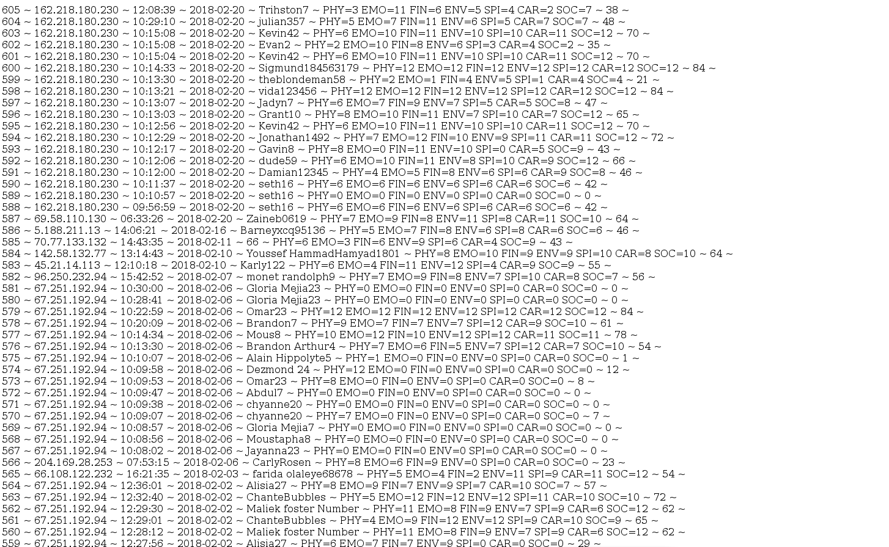
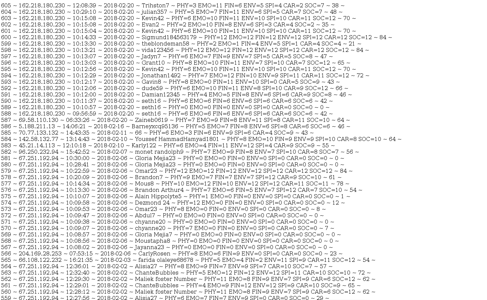
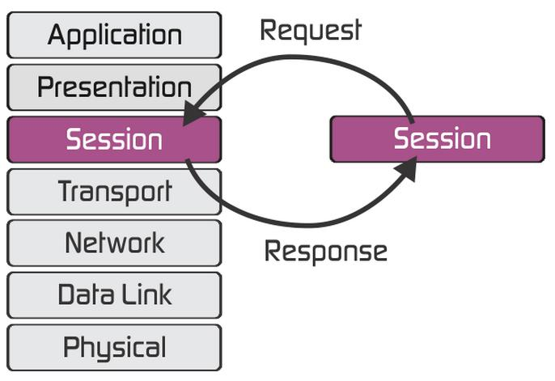
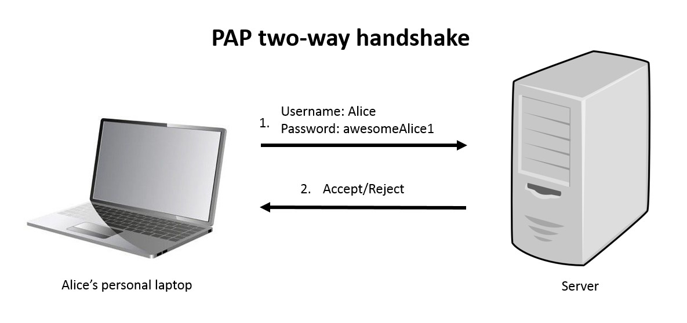
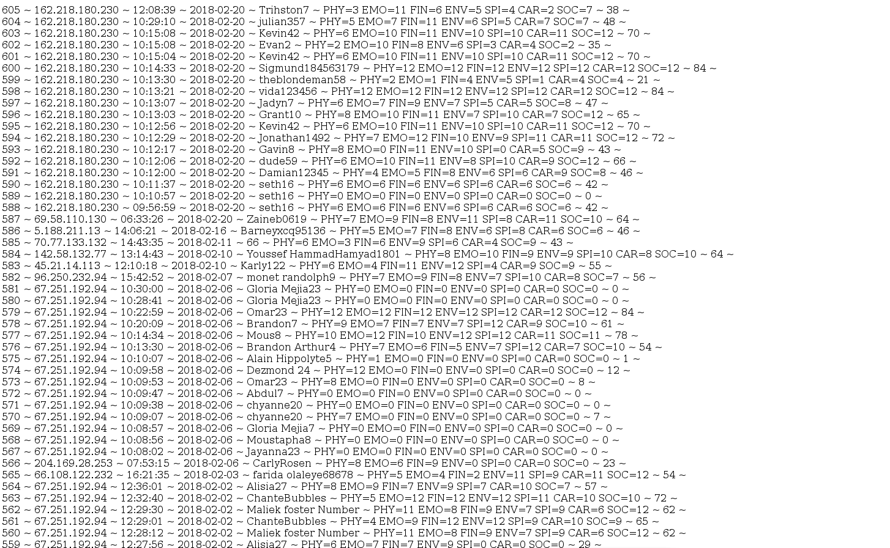

| LOCATION | PAP | SQL |
|---|---|---|
| The session layer is the fifth layer | Password Authentication Protocol | Structured Query Language |
|  |  |  |
In the Open Systems Interconnection (OSI) model, the session layer is the fifth layer, which controls the connections between multiple computers. The session layer tracks the dialogs between computers, which are also called sessions. This layer establishes, controls and ends the sessions between local and remote applications.
Password Authentication Protocol (PAP) is a password-based authentication protocol used by Point to Point Protocol (PPP) to validate users. Almost all network operating system remote servers support PAP. PAP is considered a weak authentication scheme (weak schemes are simple and have lighter computational overhead but are much more vulnerable to attack; while weak schemes may have limited application in some constrained environments, they are avoided in general). Among PAP's deficiencies is the fact that it transmits unencrypted passwords over the network. PAP is therefore used only as a last resort when the remote server does not support a stronger scheme such as CHAP or EAP.
SQL is by definition a language for querying and accessing data in databases, which includes transaction management to keep the database consistent. I think SQL fits in L5 because of the fact that it involves setting up and maintaining sessions (between the host issuing queries and the database server) and it uses the concept of transactions.